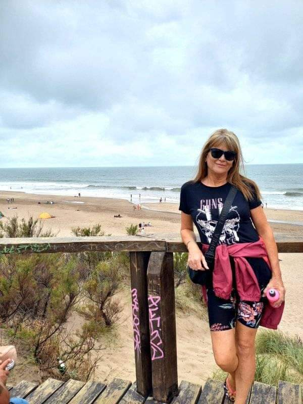

 Hola a todos ¡Bienvenidos a Luna Joyas! te vamos a contar cómo empezó este pequeño sueño que se convirtió en este hermoso emprendimiento. comenzamos hace aproximadamente cinco años vendiendo joyas al por menor, con una mínima inversión en acero blanco para ver cómo nos iba al ver que nuestras clientas nos demandaban más ya que nuestros precios y calidad eran los mejores de la zona, entonces comenzamos a ponernos en marcha e invertir en más artículos de joyeria ampliando nuestro catálogo hoy en día somos el emprendimiento número uno en nuestra localidad, contamos con ventas al por menor y por mayor, además hacemos envíos a todo el país, manteniendo nuestro servicio y calidad como el primer dia agradecemos que hoy puedas conocernos y ser parte de Luna Joyas